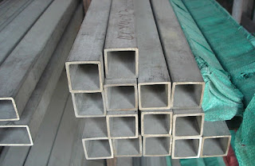
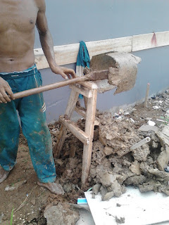

Jual Genteng Metal di Jakarta Utara ☎ ??? (www.dis.or.id)
Salah satu komponen terpenting dari sebuah bangunan baik itu kecil, sedang, besar maupun megah sekalipun pasti memerlukan atap. Ini membuktikan bahwa atap adalah kebutuhan primer setiap bangunan. Keberadannya pun sudah menggeser kayu dan bahkan sewaktu-waktu dapat menggantinya. Salah satu atap yang paling laris di pasaran adalah atap yang terbuat dari galvalum. Pada kesempatan kali ini saya akan membahas beberapa jenis atap, seperti atap galvalum, atap lengkung, seng gelombang, plat seng & plat galvalum dan masih banyak lagi.
Distributor & Supplier Genteng Metal

Genteng metal adalah salah satu jenis genteng yang berbahan dasar Zincalume, bahan ini merupakan salah satu jenis bahan yang digunakan pada baja ringan. Penggunaan genteng metal Jakarta Utara memiliki kelebihan seperti tidak adanya biaya perawatan karena genteng tidak akan berkarat, jamur ataupun pecah. Genteng metal adalah genteng yang terbuat dari campuran dari bahan bahan yang terbuat dari logam, seperti zinc, baja ringan dan galvanis. Selain itu genteng metal Jakarta Utara dinilai lebih anti bocor. Keberadaan genteng metal Jakarta Utara sudah menggantikan genteng konvensional yang terbuat dari tanah liat. Anda cukup menghubungi contact person yang sudah tertera di setiap industri yang anda butuhkan. Warnanya pun beragam sehingga akan membuat rumah maupun bangunan yang dinaunginya menjadi terlihat lebih modern dan berbeda dibandingkan dengan rumah-rumah lain di sebelahnya.
Apakah anda mencari genteng metal Jakarta Utara? Silakan kunjungi official site dis.or.id dan temukan info menarik untuk anda. Karena kepuasan dan kepercayaan pelanggan adalah segalanya bagi kami. Bila belum percaya, maka anda dapat mengujungi situs official kami di dis.or.id untuk mendapatkan info yang lebih lanjut dan dapatkan penawaran terbaik dari kami khusus untuk anda.
Info Pemesanan Selengkapnya
Google Maps: https://www.google.com/maps/d/u/0/viewer?mid=18K_Vf8GKnjN9AtE2jUMATDSYvScojDst&ll=-7.269373870070218%2C112.655575&z=16
Note: https://www.facebook.com/notes/distributor-of-industrial-supply/pabrik-supplier-genteng-metal/1783191985314014/
Event: https://www.facebook.com/events/1480458558737554/
Portfolio Produk: https://www.facebook.com/pg/DistributorOfIndustrialSupplyDIS/photos/?tab=album&album_id=1683750531924827
Distributor & Supplier Besi Beton

Besi beton adalah besi yang digunakan untuk penulangan konstruksi beton atau biasa dikenal sebagai fungsi badan bertulang. Ada beberapa jenis material konstruksi yang ditawarkan, seperti besi beton dengan kualitas yang terbaik. Bentuk besi beton ulir yang berupa sirip dapat meningkatkan daya lekat guna menahan pergerakan dari batang secara relatif terhadap beton. Maka dari itu anda harus selektif untuk menentukan besi beton mana yang sesuai dengan yang anda inginkan.
Segera kunjungi dis.or.id untuk mendapatkan besi beton yang anda inginkan. Dengan mengunjungi situs tersebut, anda bisa mendapatkan detail info serta harga yang pastinya sangat murah di bandingkan tempat lainnya. Kualitas dan mutunya pun telah terjamin. Jadi, anda tidak perlu ragu lagi.
Distributor & Supplier Steel Grating

Grating merupakan jenis baja yang bisa dibentuk kotak-kotak ataupun bilah yang antar bagiannya saling membentuk hubungan. Plat Grating tersebut dibuat dari jenis baja dengan kualitas yang tinggi kemudian dilas antara satu dengan yang lain. Perlu diketahui, bahwa grating ini merupakan plat besi yang dibuat dari rangkaian besi dan plat strip. Grating ini disusun dari baja berkalit dan dilas di bagian permukaan silangnya. Selain untuk keamanan, juga untuk aksesoris kolam renang. Pada umumnya, Grating hanya memiliki 2 type, yaitu serrated atau bergerigi dan plain atau polos.
Disana anda bisa mendapatkan steel grating dengan berbagai ukuran tertentu dengan harga yang sangat terjangkau namun berkualitas dan bermutu tinggi. Memesan steel grating di dis.or.id pastinya anda tidak akan merasa rugi.
Distributor & Supplier Pipa (Hitam/Gas, Galvanis)

Manfaat dari pipa hitam galvanis memang banyak sekali untuk kebutuhan konstruksi bangunan. Anda dapat mengkonsultasikan keperluan pipa hitam tersebut pada kami dan mengetahui informasi harganya lebih detail.
Distributor & Supplier Kawat Bronjong/Gabion

Kawat bronjong dikenal sebagai anyaman yang terbuat dari kawat di mana tujuannya agar tebing yang tinggi tidak longsor. Hal ini disebabkan kawat ini dilapisi dengan galvanis. Selain itu, sebenarnya kawat bronjong ini juga bisa dikatakan sebagai pemerkuat bukit. Ini biasanya diterapkan pada tebing tinggi yang sangat rawan sekali terjadi longsor atau erosi karena air hujan. Anda bisa lihat tumpukan bebatuan di pinggir pantai yang dirantai dengan kawat bronjong.
Jika sat ini anda sedang membutuhkan kawat bronjong, anda bisa langsung saja mengunjungi dis.or.id. Karena disana terdapat kawat bronjong dengan berbagai ukuran dan berbagai jenis. Tak hanya itu, kawat bronjong yang disediakn juga terdapat bermacam ukuran.
Distributor & Supplier WF H-beam
.jpg)
Saat ini, jenis besi WF memang banyak dicari. Dari sisi kekuatan, jenis besi ini tergolong padat dan kuat selipun di tekan dan di tarik. Untuk membuat bangunan seperti rumah, pagar, industri, jalan raya, pabrik, dan lain-lain Anda bisa memakai jenis besi ini.
Jika membawanya Anda juga tidak perlu khawatir keberatan karena besi ini lebih ringan dan praktis.
Kini anda bisa mendapatkan besi WF H-beam dengan sangat mudah, caranya anda bisa langsung saja datang ke dis.or.id. Harga yang di patok juga sangat terjangakau, jadi anda tidak perlu mengeluarkan budget terlalu banyak. Terdapat berbagai ukuran dari besi WF yang bisa anda jadikan pilihan sesuai dengan kebutuhan anda.
Distributor & Supplier Expanded Metal

Expanded metal ini merupakan lembaran baja yang berbentuk jala yang memiliki lubang-lubang yang homogen serta sangat pas jika dimanfaatkan untuk berbagai aplikasi selain pagar BRC. Fungsi expanded metal diantaranya untuk anak tangga pada tower dan ternyata banyak juga digunakan di dermaga/pertambangan/konstruksi lepas pantai. Selain itu, Expanded Metal ini juga memiliki banyak jenis. Umumnya dipergunakan sebagai partisi pengaman gudang, railing, pelindung mesin, pagar penjara, plafond, dan lain sebagainya.
Kini anda bisa membeli expanded metal yang anda inginkan dengan mengunjungi dis.or.id. Terdapat berbagai ukuran dari expanded metal yang bisa anda pilih dan anda pesan sekarang juga. Kunjungi dis.or.id untuk memesan expanded metal dengan harga yang murah serta mutu yang terjamin.
Distributor & Supplier Plat (Hitam, Kapal, Bordes, Strip)

Namun yang terpenting pastikan anda membeli plat besi SNI. Mahalnya harga tergantung dari ketebalan besi, motif, dan campuran bahan yang digunakan.
Anda bisa mendapatkan plat hitam, plat kapal, plat bordes dan plat strip dengan mengunjungi situs dis.or.id. Disana terdapat berbagai macam plat yang anda butuhkan dan pastinya dengan harga yang sangat terjangkau. Anda pastinya tidak akan rugi jika membeli plat besi dengan banyak varian dan jenis yang disediakan disana.
Distributor & Supplier Floor Deck (Bondex)

Jika dibandingkan dengan triplek maupun bahan lain yang digunakan untuk membuat sebuah dek, ada beberapa kelebihan Floor Deck yang tidak dimiliki oleh beberapa bahan lain tersebut. Menggunakan Floor Deck bisa mengurangi pemakaian perancah serta tiang-tiang penyangga sehingga akan lebih menghemat biaya. Pemakaian dari floor deck juga bisa membuat proses pengerjaan dan pembuatan dak menjadi lebih mudah, cepat dan efisien. Sedangkan untuk panjang dan juga lebarnya ada beberapa variasi.
Kini anda bisa mendapatkan floor deck dengan kualitas dan harga terbaik dengan mengunjungi dis.or.id. Disana anda bisa mendapatkan info lebih lengkap dan detail mengenai harga dan spesifikasi dari floor deck.
Distributor & Supplier Atap Galvalum

Seng galvalum adalah bahan seng dengan berbagai kelebihan yang memiliki komposisi tertentu. Sifat galvalum yaitu ringan dan tipis namun memiliki kualitas tinggi.
Atap galvalum memang menjadi salah satu incaran atap saat ini dikarenakan galvalum dinilai banyak orang lebih efektif jika dibandingkan dengan galvanis.
Galvalum diklaim mempunyai daya tahan karat 4x lebih kuat dari galvanis. Anggapan ini sangat keliru, karena galvalum bukanlah atap seng pada umumnya. Bahannya yang terkomposisi dengan baik membuatnya tidak berisik bahkan ketika hujan, tahan lama dan anti karat. Karena galvalum mempunyai daya tahan karat 4x dari galvanis. Jenisnya yang beragam dan banyak ukuran yang dapat disesuaikan mampu memenuhi kebutuhan anda.
Distributor & Supplier Atap Lengkung

Bagian yang berfungsi sebagai pelindung bagi pengguna dan isi bangunan dari panas, hujan dan berbagai macam cuaca adalah atap. Tidak terkecuali gudang, halte, maupun peneduh bagi kendaraan. Tidak hanya itu saja kegunaan atap lengkung.
Atap lengkung terbuat dari bahan galvalum dan zincalum yang sudah terkomposisi dengan sempuran.
Penggunaan atap lengkung contohnya adalah pada pembuatan atap stadion. Salah satunya adalah pada stadion bola maupun kolam renang. Terkadang, atap bangunan mereka merupakan atap dengan jenis atap lengkung. Yaitu, lengkungannya yang sangat tidak biasa jika dibandingkan dengan atap galvalum yang lain. Maka anda akan mendapatkan penawaran dengan harga terjangkau. Karena kami adalah tangan pertama yang bertindak sebagai supplier, toko sekaligus distributor.
Distributor & Supplier Truss Canal C
Sudah tahukah anda apa yang dimaksud dengan galvalum? Galvalum memang istilah yang kerap kali kita dengar dan umumnya memang sangat erat kaitannya dengan baja. Jadi, galvalum adalah salah satu jenis baja terbaik dimana memiliki cirikas ringan dan tipis namun memiliki daya tahan, dan kekuatan yang sangat baik bahkan di klaim lebih baik bila kita bandingkan dengan baja konvesional. Oleh karena itulah besi ini menjadi buruan dan primadona bagi sebagian orang. Besi kanal C ini lebih banyak di pakai untuk atap sebuah rumah, terutama dalam membangun rangka atap nya. Jarak antar reng galvalume perlu diperhatikan. Besi ini tidak dibuat oleh tukang las biasa, melainkan di olah oleh pabrik yang khusus bergerak dibidang peleburan besi dan logam. Maka janganlah ragu dengan pilihan anda.
Distributor & Supplier Hollow Galvalum

Kayu pun sudah digeser, dikarenakan keberadaan hollow galvalum ini. Jika pada jaman sebelum nya banyak orang menggunakan kayu, sekarang sudah mulai beralih ke pilihan yang lebih cerdas, yaitu menggunakan besi baja berjenis hollow.
Rumah rumah masa kini, sudah banyak yang menggunakan rangka jenis hollow untuk pembuatan plafonnya. Sehingga tidak heran bila hollow galvalum menjadi produk paling dicari oleh masyarakat dalam industri pembangunan. Apakah anda sedang mencari hollow galvalum dengan segala kelebihannya? Bila iya, maka anda cukup mengunjungi situs dis.or.id. Namun sayangnya masih banyak pekerja bangunan yang masih terkendala dari segi pemasangan nya. Tunggu apa lagi, silahkan hubungi customer service kami untuk melakukan pemesanan hollow galvalum.
Distributor & Supplier Seng Gelombang

Seng gelombang dijual dengan harga yang relatif murah dibanding genteng, hal inilah yang menjadi daya tarik besar penggunaannya. Ia lebih mudah di pasang dan harga jual yang ekonomis dipasaran membuat seng gelombang memiliki banyak peminat. Atap menjadi bagian penting sebuah bangunan yang harus diperhatikan. Besarnya ukurang seng gelombang membuat banyak orang yang enggan untuk membelinya. Pemasangan seng pada atap rumah haruslah dibantu dengan kerangka kayu, atau bisa juga anda memanfaatkan kerangka galvalum yang kini sudah bermunculan di masyarakat dan lebih unggul di banding kerangka kayu sendiri.
Seng gelombang sekarang ini diburu banyak masyarakat untuk menutup bagian atap bangunan mereka. Distributor penjual seng gelombang sekarang ini sudah menyebar ke seluruh Indonesia, baik di kota-kota besar maupun kecil.
Distributor & Supplier Plat Seng

Plat galvanis ini kebanyakan dijual secara lembaran, dan ada juga yang menjual nya per meter. Selain itu manfaat dan kelebihan yang dimiliki jauh lebih banyak dari seng biasa.
Banyak orang yang selama ini hanya membeli seng galvalum tanpa mengetahui ukuran yang sesuai dengan kebutuhan nya. Bagaimana perihal harganya? Bila anda bandingkan maka jarak harga plat galvanis 3mm akan berbeda jauh dengan 1mm, tentu hal ini wajar karena salah satu penentu harga dari sebuah plat adalah ukuran ketebalannya. Plat gavalum sendiri sering dinilai sebagai pengganti seng biasa terbaik, plat jenis ini sudah banyak digunakan untuk talang, pabrik, rumah, ataupun kebutuhan outdoor lainnnya.
Apakah anda sedang mencari plat seng & plat galvalum? Anda berada di tempat yang tepat, silakan kunjungi situs dis.or.id untuk info lebih lanjut. Oleh karena itu, peran atap pada sebuah rumah sangatlah penting.
Distributor & Supplier Besi Wiremesh

Wiremesh merupakan besi yang diproduksi dengan bantuan mesin las otomatis dimana ia menggabungkan besi lonjor hingga membentuk anyaman. Besi wiremesh sering di anggap banyak orang adalah besi anyam karena strukturnya yang mirip dengan anyaman. Ada banyak jenis besi wiremesh, diantaranya adalah besi wiremesh dengan desain kotak dan jajar genjang. Pengaplikasian besi wiremesh dalam kehidupan ini cukup banyak, apalagi dalam dunia konstruksi, besi wiremesh dimanfaatkan sebagai penguat dak beton, plat lantai, dan juga anak tangga. Tentu saja, tidak semua kebutuhan besi wiremesh bisa menggunakan jenis yang sama. Untuk bangunan bertingkat besi wiremesh yang digunakan adalah ukuran 8 sampai 10. Sedangkan wiremesh ukuran 4 sampai 6 untuk kebutuhan bangunan biasa. Jika anda saat ini membutuhkan besi wiremesh dengan kualitas terbaik, segera kunjungi dis.or.id.
Distributor & Supplier Pagar BRC

Pagar beton merupakan pagar yang dibuat dari material beton dimana ia memiliki diameter ketebalan 5 mm – 8 mm, tentu saja anda bisa memesan kebutuhan pagar BRC ini sesuai dengan kebutuhan. besi-besi berdiameter diatas digabungkan dengan bantuan mesin las wiremesh sehingga tersusun menjadi satu bagian rapi. Pemanfaatan pagar BRC sendiri tergolong sebagai pagar minimalis yang siap digunakan untuk melindungi sebuah bangunan. Untuk soal kekuatannya, pagar BRC dibuat dengan tegangan tinggi U55 grade yang memiliki tegangan ijin 2900kg/cm2 sehingga kekuatan yang ia miliki bahkan mencapai 2. Pagar BRC memiliki daya tahan sampai > 10 tahun karena ia tergolong besi yang tahan karat karena sudah terlapisi dengan lapisan galvanis.
Distributor & Supplier Kawat Loket, Kawat Harmonika

Pemanfaatan kawat harmonika sendiri sangat banyak, apalagi mengingat bentuknya yang kuat seperti anyaman. Apalagi jenis kawat galvanis yang digunakan tahan karat dan korosi, sangat awet bila anda bandingkan dengan jenis kawat biasa. Anda bisa memesan kawat loket harmonika ini sesuai dengan kebutuhan, kami dapat menerima pesanan dengan lebar maks 3 meter dan panjang yg tak terhingga.
Distributor & Supplier CNP & UNP

Besi yang sering diaplikasikan untuk keperluan sambungan dan dudukan atap adalah besi kanal UNP, bentuk besi ini melengkung dan membentuk huruf U. Selain sebagai material konstruksi sambungan, besi kanal U banyak digunakan untuk kebutuhan penutup dinding / girts. Dilihat secara sekilas, spesifikasi dari besi UNP hampir mirip dengan besi WF. Besi UNP juga sering dikaitkan dengan besi CNP yang juga masuk dalam kategori kelasnya. Besi CNP memiliki bentuk yang hampir mirip dengan huruf C sehingga ia sering disebut sebagai profil C / balok purlin. Besi CNP sangat fleksibel dalam pengaplikasiannya karena ia dapat dimodifikasi dari plat koil dengan teknik cutting sehingga membentuk huruf C. Anda bahkan bisa menggunakan besi CNP untuk memenuhi keperluan industri dalam bidang otomotif.
Distributor & Supplier Besi Siku

Pastinya anda sudah mengenal material besi siku ini dengan baik, dengan ciri khasnya sebagai besi penyangga banyak sekali manfaat yang diberikan olehnya. Bentuk besi siku sudah terukur sehingga bisa dijadikan penyangga yang bisa diandalkan. Kedua sisi pada besi siku berbentuk tegak lurus dengan sudut yang berbeda, ada besi siku sama sisi, dlsb. Besi siku dibuat dengan ukuran maksimal 6 meter dan dapat menyesuaikan panjang sisi dan ketebalan tiap sisinya. Anda dapat mengunjungi situs resmi kami untuk info pemesanan besi siku selengkapnya! Telah tersedia besi siku dengan berbagai ukuran yang bisa anda pesan. Produk besi siku yang kami tawarkan cocok untuk beragam keperluan, baik rumahan, konstruksi, industri dan sebagainya. Hubungi saja kontak yang telah tersedia untuk mengetahui informasi pemesanan lebih detail.
Distributor & Supplier Hollow (Hitam, Galvanil, Galvanis)

Besi hollow banyak sekali dimanfaatkan untuk kebutuhan proyek bangunan karena kualitasnya yang lebih kuat dibanding kayu. Dengan menggunakan material ini pembangunan konstruksi juga bisa selesai lebih cepat sehingga meminimalkan upah pekerja. Jika saat ini anda membutuhkan besi hollow, anda dapat menghubungi kontak yang telah tersedia atau kunjungi saja website resmi kami di dis.or.id. Kami telah menyediakan besi hollow hitam galvanil galvanis yang bisa anda pesan langsung. Apabila anda membutuhkan material hollow hitam, kami dapat melayani kebutuhan anda tersebut dengan berbagai spesifikasi ukuran. Kami pun merupakan distributor relasi dari dis.or.id yang menawarkan produk hollow hitam galvanil galvanis dengan kualitas terbaik dan harga yang murah. Manfaat besi hollow dalam kehidupan ini banyak sekali, diantaranya untuk keperluan pagar, teralis, pintu besi, dan berbagai kebutuhan lain. Butuh info lebih lanjut? Anda dapat menghubungi kontak yang telah tersedia. Untuk informasi detail mengenai panjang dan harganya, segera hubungi kami. Anda bebas untuk menentukan ukuran pesanan besi hollow yang dibutuhkan pada kami. Jika anda tertarik memesan besi hollow ini maka tentukan dulu total kebutuhan anda, hubungi kami segera untuk info lebih lanjut!Selain sebagai pengganti material kayu, besi hollow yang kami jual dapat anda manfaatkan untuk kepentingan teralis, pintu besi, pagar, dan lain sebagainya.Bagi anda yang membutuhkan besi hollow, anda dapat menghubungi kami, besi hollow yang kami tawarkan cocok untuk kebutuhan pagar, pintu besi, teralis, dan lain sebagainya.Selain sebagai pengganti material kayu, besi hollow banyak dimanfaatkan untuk kebutuhan pintu besi dan teralis. Anda dapat menghubungi kontak kami untuk melakukan perhitungan kebutuhan hollow hitam tersebut. Hubungi kami untuk lakukan konsultasi kebutuhan besi hollow dan panjang yang dibutuhkan. Bagi anda yang membutuhkan besi ini, kami dapat membantu anda untuk menentukan ukuran besi yang diperlukan dengan menghubungi kontak kami!
Distributor & Supplier Pipa Pancang

Untuk yang di bahas pertama adalah pipa pancang. Apalagi dengan fungsinya yang semakin memudahkan pemasangan. Terutama bagi Anda yang sedang membangun proyek di atas permukaan laut, tentu saja ini akan sangat membantu. Sedangkan dari segi spesifikasi, pipa pancang tersedia dalam berbagai ukuran. Jika saat ini Anda salah satu yang membutuhkan pipa pancang, tidak perlu khawatir karena pipa ini akan di dapatkan dengan sangat mudah. sedangkan untuk kualitas yang Anda dapatkan, jangan khawatir karena bisa di jamin mutunya tinggi. Di sini Anda akan mendapatkan pipa pancang berkualitas yang siap di gunakan.
Jasa Pondasi Bor (Strouss/Borepile)

Kalau menyebut pondasi bor, tentu saja tidak asing lagi jika dalam setiap pembangunan akan di butuhkan hasil maksimal termasuk dalam hal ini. Nah, jika Anda bingung terkait hal itu, kini ada banyak jasa yang bisa menjadi jalan keluar Anda dalam pelayanan pondasi bor. Terkait jasanya tidak perlu jauh-jauh karena di sini Anda bisa menemukan pemesanan yang mudah. untuk kualitasnya pun tidak perlu di pertanyakan lagi karena dengan jasa profesional yang lebih berpengalaman ini, pengeboran akan semakin terjamin. Apalagi mengingat pelakunya adalah mereka yang sudah profesional dan sangat berpengalaman. Yakni pengeboran manual atau yang otomatis dengan menggunakan mesin. Sebenarnya, jika selain Anda menggunakan jasa pengeboran, Anda pun bisa membeli mesin bor sendiri. Sedangkan untuk hasil pengeboran manual maupun yang otomatis atau menggunakan mesin, secara umum sama-sama bagusnya.
Distributor & Supplier Genset (New/Second)

Produk yang satu ini merupakan penghasil ternaga listrik yang dalam penggunaannya memanfaatkan bahan bakar berupa solar. Dan keduanya pun bisa Anda dapatkan di DIS.
Kalau masalah harga, memang genset cukup mahal sehingga banyak yang memilih untuk membeli yang bekas.
Distributor & Supplier UPS

Terkecuali jika membicarakan dunia elektro. Sedangkan dalam pengertiannya sendiri secara singkat UPS adalah salah satu alat elektronik di mana bisa menjadi sumber listrik ketika sumber utamanya putus. Sejauh ini tentu saja akan sangat penting memiliki UPS terutama bagi pengguna komputer. Termasuk juga kualitas barang dan kapasitas listrik yang si hasilkan. Karena itulah ketika Anda membelinya silahkan menyesuaikan terlebih dahulu seberapa besar kapasitas penampungan listrik yang di butuhkan. mengingat akan hal tersebut, maka Anda bisa memilih yang paling pas untuk pembeliannya. Sedangkan dalam penjualan, di sini kami menawarkan UPS dengan kualitas terjamin dan harga memadai.
Distributor & Supplier Forklift (Second)

Di dunia industri, tentu saja penggunaan forklif juga tidaklah asing. mengimbangi akan hal itu, tidak heran jika kini penjualan forklif ada di mana-mana. Sedangkan di sini, Anda bisa menemukan penjualan tersebut dengan kualitas barang yang memuaskan sekalipun merupakan barang second. Nah, mengingat kualitasnya yang terjamin, maka akan semakin memudahkan berbagi aktifitas industri pengguna nya. Yang lebih menarik lagi, forklif cukup menguntungkan karena jika sudah tidak di gunakan lagi Anda bisa menjualnya kepada beberapa distributor yang tersedia di berbagai tempat.
Jasa Pembuatan Moulding Inject

Di sini pun Anda bisa mendapatkan jalan keluarnya. Selain itu, masalah kualitas pun juga tidak kalah karena moulding inject yang di hasilkan memiliki kualitas terbaik. Jika ingin mendapatkan moulding inject dengan kualitas terbaik, maka memang di sini lah tempatnya. Anda tidak perlu khawatir terkait hal itu karena moulding inject yang di hasilkan pun juga merupakan kualitas yang terbaik. Selanjutnya, silahkan Anda sesuaikan pilihannya dengan kebutuhan yang sedang Anda cari.
Jasa Pembuatan Sparepart Mesin Produksi / Alat Berat

Dalam setiap proyek pembangunan, adanya alat berat atau sparepart tentu bukanlah hal yang asing pula. jadi untuk itu silahkan Anda memilih jasa terpercaya yang akan membuatnya dengan maksimal sebagaimana di Industri DIS. Terkait dengan hal itu, perlu Anda ketahui bahwa pembuatan sparepart yang salah, bisa jadi akan membahayakan si pengguna. Oleh karena itulah di butuhkan hasil berkualitas sehingga bisa bekerja secara maksimal. Mengenai alat berat, dalam pembuatannya memang tidak bisa sembarangan. Perbedaan harga tersebut bisa berdasarkan pada jenisnya yang berbeda maupun ukurannya. oleh karena itu, di butuhkan hasil sempurna agar dalam penggunaannya bisa maksimal.
Jasa Service Elektronik (Kompor Gas, Dispenser, Mesin Cuci)

oleh karena itulah di DIS sendiri juga menyediakan jasa service elektornik seperti kompor gas, dispenser dan mesin cuci. Jika Anda bingung di mana memperbaiki barang tersebut, bisa saja langsung merujuk pada salah satu jasa yang di tawarkan DIS. Kalau berbicara masalah kualitas, jangan khawatir karena DIS menyediakan service handal yang akan melakukan perbaikan sempurna. Selanjutnya, untuk masalah kualitas, tidak perlu di pertanyakan lagi karena DIS akan memberikan jasa yang memiliki perhitungan tingkat perbaikan dan keamanan yang tinggi. Akan tetapi pada umumnya, orang-orang yang melakukan service elektronik adalah pada barang yang bermasalah. Selain untuk perbaikan, Anda pun bisa juga hanya melakukan pengecekan tanpa keluhan sebagaimana service pada umumnya.
Hanya bangunan yang tidak terselesaikan dan bangunan yang terbengkalai yang tidak mempunyai atap. Atap memang adalah kebutuhan primer bagi setiap bangunan. Kebutuhan primer seperti atap, memang tidak dapat diragukan lagi fungsinya. Karena rumah paling kecil sekalipun pasti mempunyai atap di atasnya. Bila anda berkenan, maka anda dapat mengujungi situs utama kami dis.or.id. Dapatkan pula info menarik tentang bahan-bahan bangunan yang anda cari.